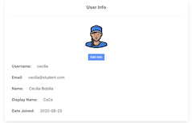

Capstone Project
Full stack online learning platform using React, Django, TypeScript. Completed using an Agile/Scrum project management system. This project is part of a private repo, so please reach out to chat about it!
Full stack online learning platform using React, Django, TypeScript. Completed using an Agile/Scrum project management system. This project is part of a private repo, so please reach out to chat about it!
Kaggle competition for a class project to predict if a passenger survived or not using multiple machine learning models.
A relational database project which involved designing the database (SQLite) and then designing a user interface (PHP/HTML) to interact with the information in the database.
A client server architecture application built using an MVC design pattern in Java. It allows you to add, edit, and delete customers.
Through a marketing automation software I created landing pages that allowed employees to send templated emails to their clients. They would fill out a form and an email would be sent with the correct email with that client's information inserted for the variables.
Created an automated system that would send a text message to a fan asking for their prediction of the winner of the game that week. We could download the responses as a csv and upload them to an Excel file that kept track of the standings each week.